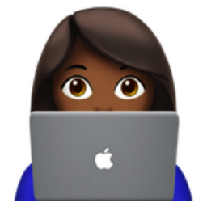

* Favorite Verse: “16 Therefore we do not lose heart, but though our outer person is decaying,
yet our inner person is being renewed day by day. 17 For our momentary, light affliction is producing for us an
eternal weight of glory far beyond all comparison, 18 while we look not at the things which are seen, but at the
things which are not seen; for the things which are seen are temporal, but the things which are not seen are
eternal." 2 Cor 4 : 16 - 18
* Work Style Emoji:

* Preferred Music/Playlist While Working: Worship or Homily
* Specific Needs/Preferences: Clear, direct communication, written instructions, breaks for focus
* Triggers to Avoid: unclear tasks
* Preferred Role in Team Projects: Leader, Contributor, Organizer
* Best Ways to Support You: Regular check-ins, clear task definitions.
* Preferred Collaboration Tools: Slack, Google Docs.